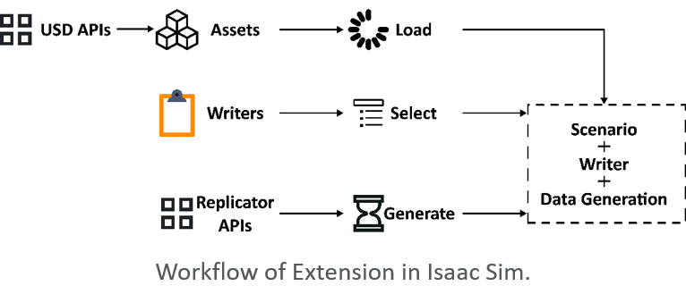
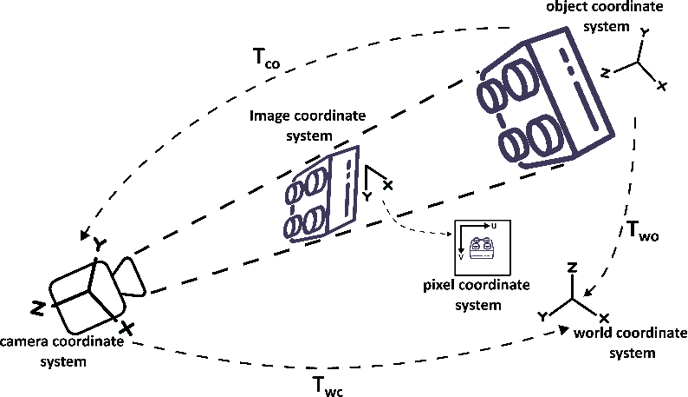
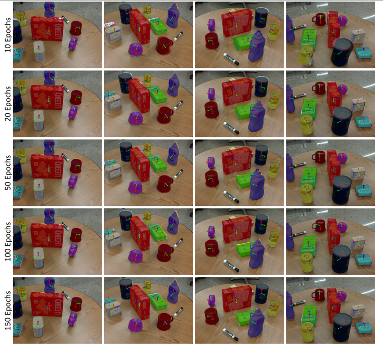
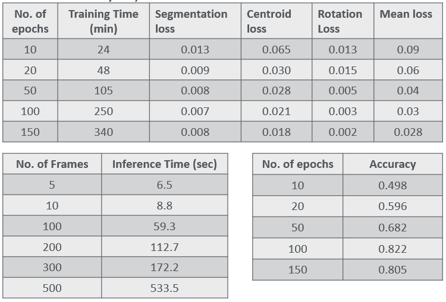
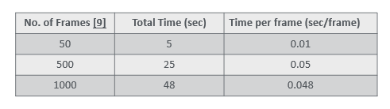

Synthetic-data-generation extension
Omniverse extension walkthrough: randomised scenes and annotated outputs.
Built end-to-end synthetic-data pipelines in NVIDIA Omniverse Isaac Sim and trained a PyTorch pose-estimation model entirely on synthetic data — reaching 81% accuracy on real-camera bin picking with no real-data fine-tuning.
Omniverse extension walkthrough: randomised scenes and annotated outputs.




